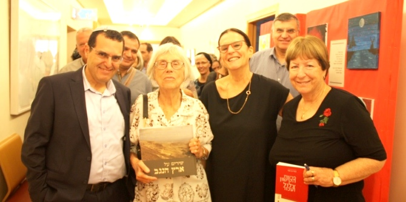

During the 2018–2019 academic year, the Mandel Center for Leadership in the Negev hosted a series of study days for southern district supervisors of Israel’s Ministry of Education that focused on ethics in the education system. The final event in the series included a lecture from retired Supreme Court Justice Dalia Dorner on law and constitution in a democratic state.
In her lecture, Justice Dorner reviewed the history of the integration of women into key positions in state institutions, according to the principle of human equality: “Equality means treating equals equally, and treating those who are different according to their differences.” She criticized the lack of a constitution in Israel: “Israel is founded on the bedrock of freedom, justice, and peace, yet we still do not have a constitution. We have no constitutional scaffolding, and our government, whichever government it may be, does not have the necessary restrictions for a democracy that protect the state and individuals, and recognize human rights.”
According to Justice Dorner, without a constitution, the State of Israel is developing with the help of the Supreme Court, which can rule that we have basic human rights as long as no alternative has been anchored in law. She asserted that we need an independent judiciary, but most of all we need a constitution that will spell out the rules of the game. It is the law that protects us from the regime, because the law is above government and above the vagaries of political forces.
Justice Dorner concluded her lecture with a presentation of her own personal vision. “I lit a torch at the national Independence Day ceremony in honor of our loyalty to our Jewish and democratic state; in honor of the right to dignity and of human and civil rights, especially the right to equality, to freedom, and to freedom of expression; and in honor of our great respect for human dignity, in the spirit of the words of Rabbi Akiva, ‘Beloved is man, for he was created in the divine image,’ which applies to every human being.”

{kind=link}